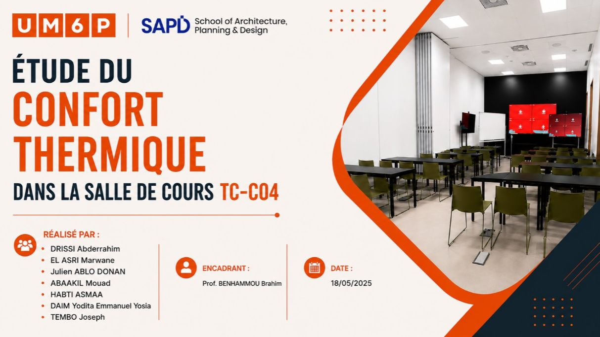
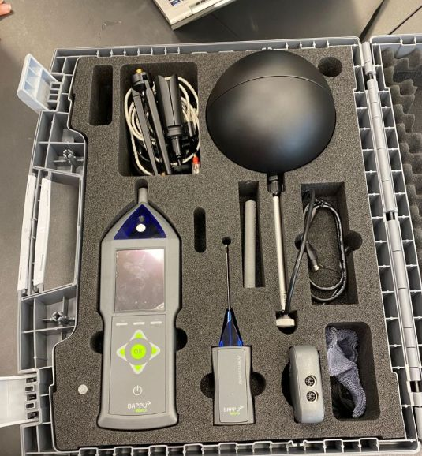

Confort thermique & qualité de l’air intérieur
Étude expérimentale de la salle TC-C04 à l’UM6P, associant mesures physiques, suivi du CO₂ et perception des occupants pour évaluer le confort intérieur.

Support de présentation de l’étude collective du confort thermique de la salle TC-C04.
Le contexte
Dans le cadre du Master Green Building Engineering and Energy Efficiency (Green BEEE) à l’Université Mohammed VI Polytechnique, School of Architecture, Planning and Design (SAP+D), nous avons mené une étude expérimentale du confort thermique de la salle TC-C04. Notre démarche croise les conditions environnementales mesurées et le ressenti des occupants.
L’objectif
Évaluer le confort thermique de la salle en confrontant les mesures physiques, les indicateurs calculés et la perception des occupants, tout en complétant l’observation de l’ambiance intérieure par le suivi du CO₂.
Mon rôle
Participation, au sein du groupe, à l’étude expérimentale, à l’analyse des données et à la comparaison des approches d’évaluation du confort.
Le travail mené
- Réalisation d’une campagne de mesures in situ à l’aide de l’instrument BAPPU : température de l’air, température radiante moyenne, humidité relative, vitesse de l’air et concentration en CO₂.
- Enquête de ressenti thermique auprès des occupants pour recueillir leur perception des conditions intérieures.
- Mise en relation des données environnementales, des indices de confort et des réponses à l’enquête.
Deux approches complémentaires
Modèle de Fanger · ISO 7730
Évaluation à travers les indices PMV (Predicted Mean Vote, vote moyen prédit) et PPD (Predicted Percentage of Dissatisfied, pourcentage prédit de personnes insatisfaites). Cette approche permet d’analyser le confort des environnements thermiquement contrôlés.
Modèle adaptatif · ASHRAE Standard 55
Analyse intégrant la capacité d’adaptation des occupants et le contexte climatique. Sa pertinence dépend du mode de fonctionnement du bâtiment, notamment dans les espaces naturellement ventilés, et des conditions d’application du modèle.
Le suivi de la qualité de l’air intérieur
La concentration en CO₂ fait partie des paramètres suivis pendant la campagne. Elle complète la caractérisation de l’ambiance intérieure et l’analyse du confort thermique.
Ce que ce travail apporte
L’étude met en évidence la complémentarité entre les mesures environnementales et le ressenti des occupants. Une évaluation pertinente du confort thermique nécessite de choisir et d’interpréter les modèles en tenant compte du fonctionnement du bâtiment, des conditions climatiques et des comportements des usagers.
Photos du projet
